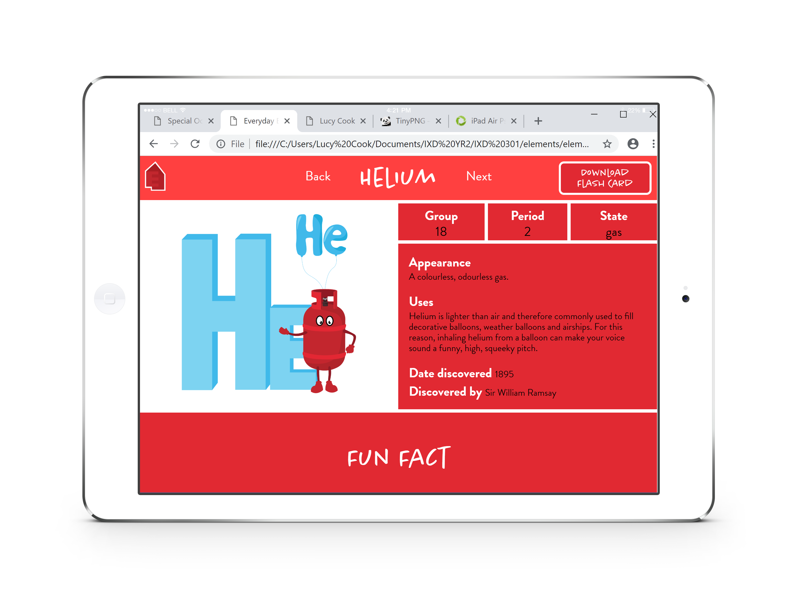

Everyday Elements
An informative website for kids to explore the scientific world of periodic elements.
Visit Website



• Kids find researching easier to understand with the help of imagery or data visualisation elements.
• YouTube is a large part of kids lives and there are many videos regarding the periodic table available.
• Perhaps including weird or fun facts in order to make elements more memorable and interesting to read about.
• Flashcards is an idea on how to present my information of my webpage.
Home: Shown to the right, I wanted to make it an illustrative and animated scene so that the theme of my elements is easily recognised as household items.
Selection: Sketches on bottom left. I drew out possibilities of how I could present my 6 chosen elements in order for the user to select and read further. Perhaps using a grid layout, slideshow or further use of imagery.
Information: Sketches on the bottom right. Again a few different ways in which I could present the information about a particular element.